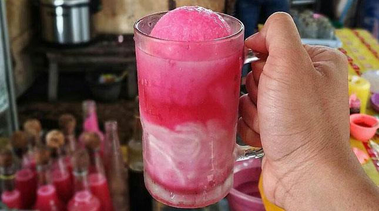
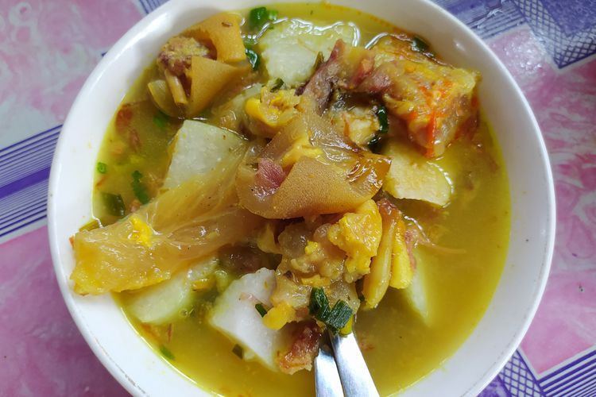

Daftar Kuliner

Es Sagwan
Es Sagwan disajikan dalam gelas yang diisi campuran santan, es serut serta sirup manis berwarna merah

Sop Kikil
Sop Kikil sangat pas dinikmati ketika hujan sedang turun. Kuah sop yang hangat ditambah aroma
yang menggoda perut membuat siapapun tidak sabar menyantapnya.

Latopia
Latopia memiliki beragam varian rasa seperti coklat, keju, kacang hijau, durian dan berbagai rasa lainnya.